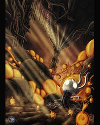
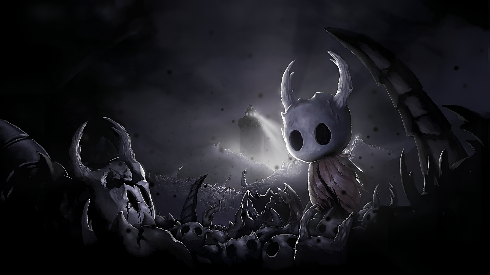

El Rey Pálido
La tribu de los Wyrm eran una tribu que vivía desde la misma época que Destello, y tenían mucho poder, suficiente para derrotar a Destello. Y aunque podrían haberlo hecho, misteriosamente empezaron a extinguirse todos, pero cuando el último Wyrm murió, se reencarno en un ser más pequeño, pero con su misma sabiduría, el Rey Pálido. El Rey Pálido descubrió lo que estaba haciendo Destello y le abrió la mente a todos los artrópodos. Con ayuda de los 5 grandes caballeros, que el Rey fue reclutando, con el apoyo de la Dama Blanca, de la que el Rey se había enamorado y sin mentes para invadir Destello fue derrotada, o más bien olvidada, puesto que no hubo batalla. En Hallownest se inició una nueva etapa

La era dorada de Hallownest
En el reino, empezó una era de prosperidad, en la que se avanzó muchísimo a nivel tecnológico. Se inventaron los tranvías, los ciervocaminos, y se descubrieron los amuletos. Cada zona de Hallownest empezó a desempeñar un papel importante en la sociedad, como Nidoprofundo, donde se empezaba a desarrollar un nuevo tranvía o en Límite del Reino, donde se creó un coliseo para disfrute de los habitantes. La Ciudad de Lágrimas se convirtió en la capital de este próspero reino, pero lo bueno no duró demasiado.
La Infección
Destello había estado planeando su venganza todo este tiempo, y lo consiguió. Aprovecho la mente de artrópodos débiles otra vez, que aunque la olvidaran, recordaban el gusto que sentían al recibir deseos. Ella se les aparecía en sueños, y cada vez los sueños se hicieron más frecuentes, y dolorosos. Era como una infección. Al final los pobres artrópodos no pudieron más y se volvieron locos, agresivos y más fuertes. El sueño fue tan poderoso que tomó forma física, era como un moco o líquido naranja (se puede observar en Cruces Infectados) y se propagó por el aire. Las tribu e artrópodos de mente más privilegiada pudieron sobrevivir, aunque alguno no resistió la tentación de tener tanto poder. Destello ya no se conformaba con gobernar mentes, ahora quería destruirlo todo. Parecía todo perdido.

Experimentos con el vacío
El Rey intentó encontrar una solución a esta plaga, y pensó que para vencer a la luz, se necesita oscuridad, así que fue al Abismo y empezó a experimentar con él para crear a un receptáculo puro. Necesitaba crear algo capaz de contener la infección en su interior, y puesto que el vacío era eso, vacío, lo aprovechó para intentar crear a un ser capaz de cumplir ese cometido. Sus primeros experimentos no salieron muy bien, ni sus segundos. Tardó muchos años en encontrar un receptáculo puro, mientras Destello amenazaba con aniquilar a los artrópodos, hasta que un día, lo consiguió.

El Hollow knight
Creó al receptáculo perfecto, o eso creía. Era el Hollow Knight, o el Caballero Vacío. El Rey necesitaba a un ser incapaz de tener sentimientos, y este lo aparentaba. El Hollow Knight absorbió a Radiance y ella se quedó atrapada en su mente, como en un sueño. Para asegurarse, el Rey consiguió que tres seres de mucho poder, se convirtieran en los sellos que contendrían al Hollow Knight, en caso de que algo saliera mal. Fueron Monomon, la Maestra, que contenía muchísima sabiduría, estudiaba mucho en sus archivos. También estuvo Lurien, el Vigilante, que vigilaba la Ciudad de Lágrimas desde su Torre y que por la lealtad que tenía hacia su rey aceptó hacer ese sacrificio. Y por último Herrah, la Bestia, reina de las criaturas de Nidoprofundo que en un principio no estaba dispuesta a sacrificarse, pero después de un trato que tuvo con el rey, aceptó. Los tres se convirtieron en los Soñadores, se durmieron para siempre y desde los sueños contuvieron al Hollow Knight.